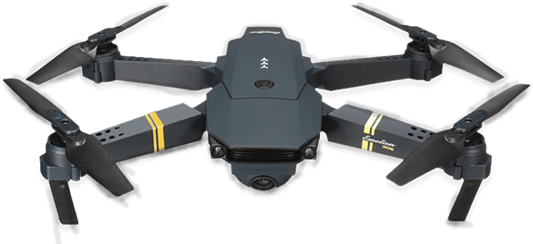

Tu blog para empezar a volar
Droner es un blog para quienes quieren iniciarse en el mundo de los drones: novedades, análisis de modelos y consejos de vuelo explicados de forma simple.

Droner es un blog para quienes quieren iniciarse en el mundo de los drones: novedades, análisis de modelos y consejos de vuelo explicados de forma simple.